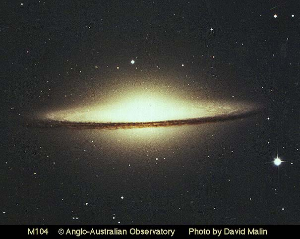

Figure 1-8: Twenty times farther away than the Andromeda galaxy, the Sombrero galaxy reminds us that universal processes produce variety as well as commonality. It also reminds us of the ballonlike nature of the universe; this galaxy is receding from us at over 2 million miles per hour.